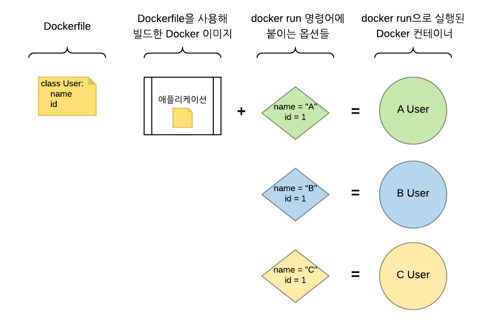
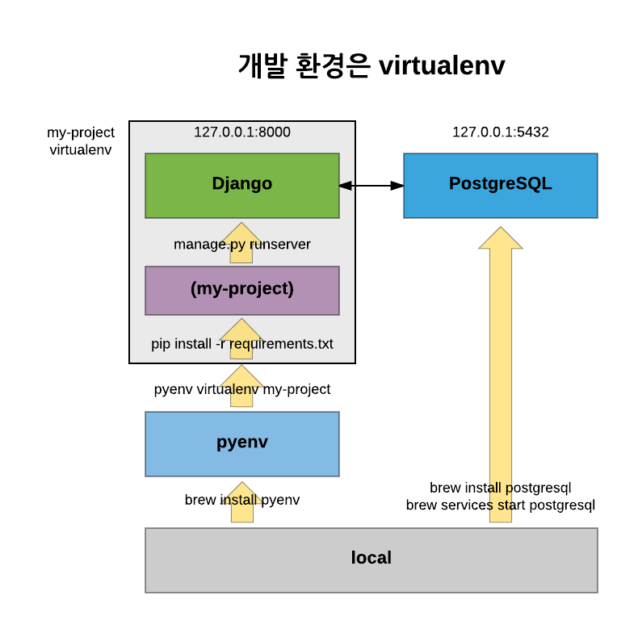
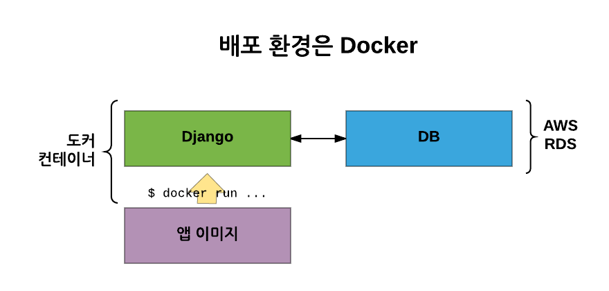
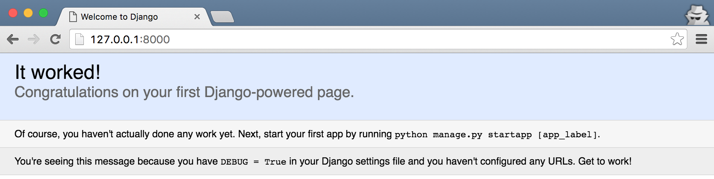
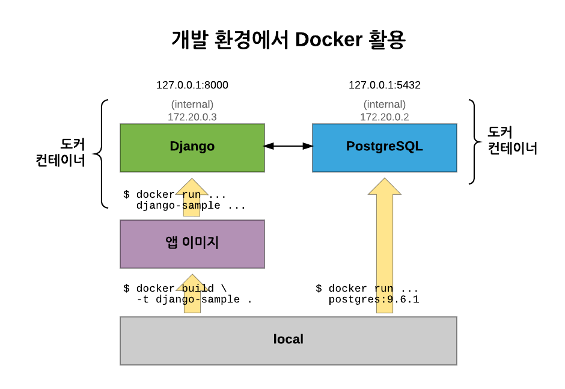
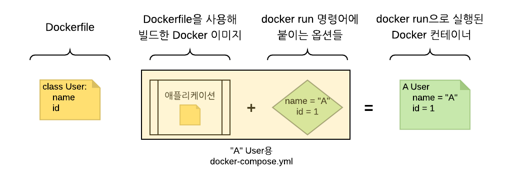
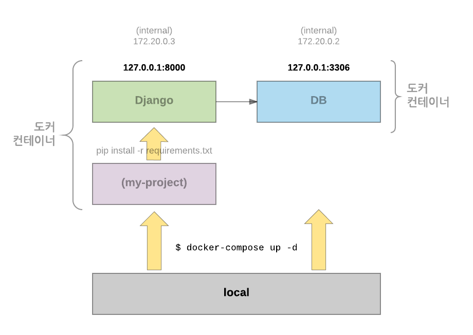
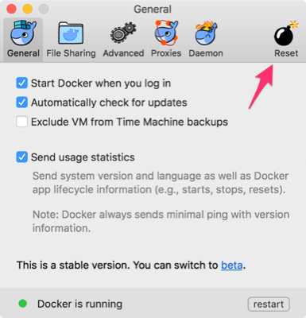
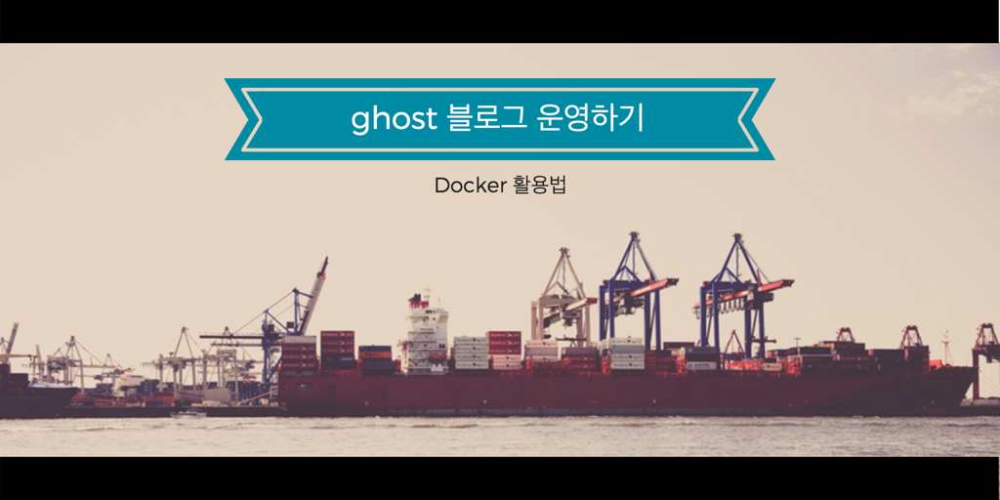

Docker (Compose) 활용법 - 개발 환경 구성하기
개정 알림
이 글의 개정본을 도커 컴포즈를 활용하여 완벽한 개발 환경 구성하기에서 읽으실 수 있습니다. 개정본에서는 도커 컴포즈의 최신 버전에 맞춰 필요 없는 설명을 일부 삭제했고, 도커 자체에 대한 설명도 왜 굳이 도커를 써야 하나요?로 분리하였습니다.
배포 환경에 도커를 사용하고 있을 때 개발 환경에서도 도커를 활용하면, 배포 환경과 개발 환경(테스트 환경까지도)이 최대한 일치하는 장점을 누릴 수 있을 것 같아서 시도를 해보았습니다.
일러두기: 글보다 슬라이드가 편한 분들은 아래 슬라이드를 보시면 되겠습니다.
2017-09-05 수정 내역
- 파이썬용 바이너리 파일(pytest, flake8 등)들의 설치 위치를 수정하여, 컨테이너 재생성시 바이너리 파일이 없어지는 문제 수정
- 파이썬 로그가 빠릿하게 출력되지 않는 문제 수정
2017-03-21 수정 내역
- 의존 패키지를 하나 추가하더라도 패키지 전체를 다시 설치해야 하는 불편을 없애고자, 패키지 관리용 볼륨 설정 내용을 추가했습니다.
0 (사전 학습) 도커가 뭐야?
아직 도커를 잘 모르는 분께는 subicura님이 작성하신 연재 글을 추천합니다.
0.1 초보를 위한 도커 안내서 시리즈
0.2 사족
subicura님의 안내서로 부족하진 않겠지만 혹시라도 이해를 도울 수 있을까 싶어서,
도커를 프로그래밍에 빗대어 보겠습니다.
Dockerfile: 서버 구성을 문서화한 것(=클래스 선언이 들어 있는 파일)docker build: 도커 이미지 만들기(=클래스 선언을 애플리케이션에 로드)docker run의 옵션들: 이미지에 붙이는 장식들(=인스턴스의 변수들)docker run: 장식 붙은 이미지를 실제로 실행(=인스턴스 생성)
이를 그림으로 나타내면 다음과 같습니다.

프로그래밍에서는 User 클래스를 파일에 적고, 이를 애플리케이션에서 불러와서, name과 id를 할당하고, 새 인스턴스를 만들어 사용하다가, 용도가 다 하면 삭제하겠죠.
마찬가지로, 도커 이미지에 들어갈 내용을 정의하고(Dockerfile), 이미지를 빌드한 다음(docker build), 각종 옵션을 붙여 컨테이너를 실행(docker run)하여 사용하다가, 용도가 다 하면 컨테이너를 삭제한다고 생각하시면 됩니다.
그럼, 더 이상의 자세한 설명은 생략하고 본론으로 넘어가겠습니다.
설명을 따라하기 위한 예제 프로젝트는 다음의 깃헙 저장소에서 다운받을 수 있습니다. (Django용과 Express용을 준비했습니다.)
파이썬/Django용 예제 프로젝트
노드/Express용 예제 프로젝트
1 개발 환경에 docker-compose 적용하기
1.1 개발 환경 구성은 항상 까다롭다
새 프로젝트를 시작하거나 기존 프로젝트에 참여한 후 가장 먼저 하는 일은 바로, 개발 환경 구성일 겁니다. 파이썬과 Django를 사용하는 프로젝트라면 보통 다음과 같은 과정을 거칩니다.
$ pyenv install (파이썬 버전)
$ pyenv virtualenv (파이썬 버전) (가상환경이름)
(가상환경이름) $ pip install -r requirements.txt
...
이를 그림으로 나타내면 이렇게 될 텐데요.

이 구성이 한 번에 되면 좋겠지만,
- 실제로는 패키지 설치가 막힐 때도 있고(SSL, LDAP 관련)
- 막상 배포를 했더니 개발 환경과 서버 환경이 같지 않아서 문제가 발생하기도 하고
- (실수가 있건 없건) 로컬 컴퓨터에 이미 존재하는 파이썬 환경과 꼬이는 경우도 발생
합니다.
그런데 배포 환경에서는 다음과 같이 이미 도커를 활용 중이었기에, 이 구성을 개발 환경에서도 그대로 사용할 수는 없을까 생각하게 되었습니다.

1.2 시도!
1.2.1 도커 이미지 빌드
먼저, 예제 프로젝트의 루트 디렉터리에서 도커 이미지를 빌드합니다.
$ docker build -t django-sample .
이렇게 하면 django-sample이라는 이름을 지닌 도커 이미지가 만들어 집니다.
1.2.2 앱 컨테이너 실행
이제 컨테이너를 실행해봅시다.
$ docker run -it --rm \
-p 8000:8000 \
django-sample \
./manage.py runserver 0:8000
도커의 run 명령은 구조가 다음과 같습니다.
$ docker run [옵션] 이미지이름[:태그] [명령어] [전달인자]
run 명령의 옵션에 익숙치 않은 분들을 위해 간단히 설명을 붙이자면,
-it: 컨테이너의 표준 입력과 로컬 컴퓨터의 키보드 입력을 연결한다고 생각하면 됩니다.--rm: 컨테이너를 종료할 때 컨테이너를 삭제합니다.-p: 컨테이너 외부와 내부를 연결할 포트입니다.django-sample: 실행할 이미지 이름입니다../manage.py runserver 0:8000: 개발 서버 실행용 명령어입니다.
이 명령은 실행이 되는 듯 하다가 데이터베이스를 찾지 못해 오류가 발생합니다. 그럼 데이터베이스 서버를 실행해 보죠.
1.2.3 데이터베이스 컨테이너 실행
데이터베이스 서버도 도커로 실행할 수 있습니다. 터미널 창을 하나 더 열고 다음 명령을 입력해보세요.
$ docker run -it --rm \
postgres:9.6.1
데이터베이스 서버가 실행되었지만 앱 개발 서버는 여전히 동작하지 않을 겁니다.
1.3 이제 동작하지 않는 원인을 살펴봅시다
1.3.1 앱 컨테이너가 PostgreSQL 컨테이너를 못 찾음
조금 전에는, 앱 컨테이너를 실행한 후 PostgreSQL 컨테이너를 실행했습니다. 그런데 컨테이너는 실행 직후부터 컨테이너 외부의 상황과 격리됩니다. 따라서 PostgreSQL 컨테이너가 실행되었는지 알지 못하죠.
이를 위해 1. PostgreSQL 컨테이너를 먼저 실행하고, 2. PostgreSQL 컨테이너를 실행할 때 컨테이너 이름을 붙이면(db라고 하죠), 3. 앱 컨테이너에서는 db라는 이름으로 접근할 수 있습니다.
$ docker run -it --rm \
--name db \
-e POSTGRES_DB=djangosample \
-e POSTGRES_USER=sampleuser \
-e POSTGRES_PASSWORD=samplesecret \
postgres:9.6.1
--name: postgres 컨테이너에db이라는 이름을 부여하였습니다.-e: 환경변수를 설정하여 컨테이너를 실행할 수 있습니다. 여기서는 컨테이너 시작과 함께 djangosample 데이터베이스를 만들고(POSTGRES_DB) sampleuser라는 사용자에게 접속 권한을 부여(POSTGRES_USER,POSTGRES_PASSWORD)합니다. (도커 허브의 공식 postgres 저장소에 가보면 설정할 수 있는 환경 변수 종류를 알 수 있습니다.)
이제 앱 컨테이너에서 db라는 이름을 사용하여 PostgreSQL 컨테이너에 접근할 수 있습니다.
$ docker run -it --rm \
-p 8000:8000 \
--link db \
-e DJANGO_DB_HOST=db \
-e DJANGO_DEBUG=True \
django-sample \
./manage.py runserver 0:8000
--link: 참조할 다른 컨테이너를 선언합니다.
이제 두 번째 문제로 넘어가 보죠.
1.3.2 앱 코드를 수정해도, 컨테이너 속 파일에는 반영되지 않음
컨테이너는 실행 직후부터 컨테이너 외부의 상황과 격리됩니다. 하지만 개발할 때는 보통 앱 코드를 수시로 바꾸고 개발 서버도 이를 감지하여 서버를 재시작합니다.
이를 해결하고자 격리된 컨테이너에 통로를 하나 만듭니다. 수정할 앱 코드의 디렉터리를 앱 컨테이너 내부로 연결하여, 코드를 바꿀 때마다 컨테이너 속 코드도 바뀌게 해보겠습니다. Ctrl+C를 눌러 앱 컨테이너를 종료한 후, 다시 다음 명령어를 실행합니다.
$ docker run -it --rm \
-p 8000:8000 \
--link db \
-e DJANGO_DB_HOST=db \
-e DJANGO_DEBUG=True \
--volume=$(pwd):/app/ \
django-sample \
./manage.py runserver 0:8000
--volume: 이 옵션을 사용하여 로컬 디렉터리의 특정 경로를 컨테이너 내부로 마운트할 수 있습니다. ($(pwd)는 명령을 실행하는 현재 디렉터리의 절대 경로입니다.)
이제 마지막 문제입니다.
1.3.3 db 컨테이너를 지우면, 데이터베이스 데이터가 사라짐
앞에서 db 컨테이너를 실행하면서 --rm 옵션을 지정했는데요. 이렇게 하면 db 컨테이너가 종료한 후 삭제되면서 컨테이너 내부에 쌓였던 데이터베이스 데이터들도 모두 사라집니다. 깔끔해서 좋긴 하지만 간혹 데이터베이스에 데이터를 남겨두면서 작업을 진행할 필요도 생기는데 말이죠.
이 역시 --volume 옵션을 사용하면 해결할 수 있습니다. db 컨테이너가 실행 중인 터미널에서 Ctrl+C를 눌러 컨테이너를 종료한 후, 다음 명령으로 다시 실행합시다.
$ docker run -it --rm \
--name db \
-e POSTGRES_DB=djangosample \
-e POSTGRES_USER=sampleuser \
-e POSTGRES_PASSWORD=samplesecret \
--volume=$(pwd)/docker/data:/var/lib/postgresql/data \
postgres:9.6.1
--volume: 데이터베이스 데이터가 저장되는 컨테이너 내부의 디렉터리인/var/lib/postgresql/data를 로컬 컴퓨터의 디렉터리($(pwd)/docker/data)로 연결하면, 컨테이너 삭제와 상관 없이 데이터를 유지할 수 있습니다.
1.4 재도전!
이제 도커의 run 명령어는 모두 완성된 것 같으니, 모든 컨테이너를 종료한 후 다음과 같은 순서를 따라 컨테이너들을 재시작해봅시다.
1.4.1 이번엔 db 컨테이너부터 실행
$ docker run -it --rm \
--name db \
-e POSTGRES_DB=djangosample \
-e POSTGRES_USER=sampleuser \
-e POSTGRES_PASSWORD=samplesecret \
--volume=$(pwd)/docker/data:/var/lib/postgresql/data \
postgres:9.6.1
1.4.2 앱 이미지 빌드
$ docker build -t django-sample .
1.4.3 앱 컨테이너 실행
$ docker run -it --rm \
-p 8000:8000 \
--link db \
-e DJANGO_DB_HOST=db \
-e DJANGO_DEBUG=True \
--volume=$(pwd):/app/ \
django-sample \
./manage.py runserver 0:8000
브라우저에서 http://127.0.0.1:8000을 열어보면 드디어 Django의 초기 화면을 만날 수 있습니다!

지금까지의 구성을 그림으로 그려보면 배포 환경과 거의 비슷해지겠죠.

1.5 도커 방식의 불편함
도커로 개발 환경을 구성하는 데 성공하긴 했지만, 이번엔 다른 불편이 발생했습니다.
1.5.1 장황한 옵션
첫 번째는 서버를 실행할 때마다 옵션을 적기가 귀찮습니다. 헷갈리기도 하고, 빼먹는 경우도 생깁니다. 그래서 옵션들을 미리 적어둘 수는 없을까 고민하게 되었습니다.
1.5.2 앱 컨테이너와 db 컨테이너의 실행 순서
반드시 db 컨테이너를 실행한 다음에야 앱 컨테이너를 실행해야 합니다. 그렇지 않으면 앱 컨테이너에서 db 컨테이너를 찾을 수 없기 때문이죠.
1.6 도커 컴포즈
그때 도커 컴포즈(Docker Compose)를 사용해 볼 마음이 생겼습니다. 컴포즈는 컨테이너 여럿을 띄우는 도커 애플리케이션을 정의하고 실행하는 도구(Tool for defining and running multi-container Docker applications)입니다.
컨테이너 실행에 필요한 옵션을 docker-compose.yml이라는 파일에 적어둘 수 있고, 컨테이너 간 의존성도 관리할 수 있어서 안성맞춤이었지요.
도커와 도커 컴포즈를 비교하면 다음과 같습니다.
Dockerfilevs.Dockerfile-dev: 서버 구성을 문서화한 것(=클래스 선언이 들어 있는 파일)docker buildvs.docker-compose build: 도커 이미지 만들기(=클래스 선언을 애플리케이션에 로드)docker run의 옵션들 vs.docker-compose.yml: 이미지에 붙이는 장식들(=인스턴스의 변수들)docker runvs.docker-compose up: 장식 붙은 이미지를 실제로 실행(=인스턴스 생성)
도커 컴포즈에서는 컨테이너 실행에 사용되는 옵션과 컨테이너 간 의존성을 모두 docker-compose.yml파일에 적어두고, 컴포즈용 명령어를 사용하여 컨테이너들을 실행, 관리합니다.
클래스와 인스턴스의 예를 들면, 어떤 인스턴스를 자주 생성해야 해서 필요한 변수를 딕셔너리로 저장해두는 것과 비슷하겠습니다. 이를 그림으로 나타내면 다음과 같습니다.

1.6.1 선행 조건
이후의 예시를 따라하려면 도커 엔진의 버전이 1.12.0 이상이어야 하고, docker-compose의 버전은 1.6.0 이상이어야 합니다. 최근에 도커를 설치했다면 큰 문제가 없을 겁니다.
$ docker version
Client:
Version: 1.13.1
API version: 1.26
Go version: go1.7.5
Git commit: 092cba3
Built:
OS/Arch: darwin/amd64
Server:
Version: 1.13.1
API version: 1.26 (minimum version 1.12)
Go version: go1.7.5
Git commit: 092cba3
Built: Wed Feb 8 08:47:51 2017
OS/Arch: linux/amd64
Experimental: true
$ docker-compose version
docker-compose version 1.11.1, build 7c5d5e4
docker-py version: 2.0.2
CPython version: 2.7.12
OpenSSL version: OpenSSL 1.0.2j 26 Sep 2016
이 조건이 만족했다면 이제 docker-compose.yml 파일을 만들어 봅시다.
1.7 docker-compose.yml
docker-compose.yml은 옵션을 미리 정의한 문서라고 볼 수 있습니다. 프로젝트 루트에 파일을 만들고, 다음 내용을 붙여 넣습니다. (gist 링크)
version: '2.1'
services:
db:
image: postgres:9.6.1
volumes:
- ./docker/data:/var/lib/postgresql/data
environment:
- POSTGRES_DB=sampledb
- POSTGRES_USER=sampleuser
- POSTGRES_PASSWORD=samplesecret
- POSTGRES_INITDB_ARGS=--encoding=UTF-8
healthcheck:
test: "pg_isready -h localhost -p 5432 -q -U postgres"
interval: 3s
timeout: 1s
retries: 10
django:
build:
context: .
dockerfile: ./compose/django/Dockerfile-dev
environment:
- DJANGO_DEBUG=True
- DJANGO_DB_HOST=db
- DJANGO_DB_PORT=5432
- DJANGO_DB_NAME=sampledb
- DJANGO_DB_USERNAME=sampleuser
- DJANGO_DB_PASSWORD=samplesecret
- DJANGO_SECRET_KEY=dev_secret_key
ports:
- "8000:8000"
depends_on:
db:
condition: service_healthy
links:
- db
command: /start-dev.sh
volumes:
- ./:/app/
이제 파일의 윗부분부터 한 줄씩 살펴봅시다.
1.7.1 version
version: '2.1'
docker run에서는 없었던 부분입니다. docker-compose.yml 파일의 제일 윗부분에는 파일 규격 버전을 적습니다. 파일의 규격에 따라 지원하는 옵션이 달라지며, 최근에 "3.1"이 등장하긴 했지만 보통은 "2"나 "2.1"을 사용해도 충분합니다. (파일 규격 버전에 따른 자세한 내용은 compose 파일의 버전과 호환성을 안내한 공식 문서를 참고하세요.)
여기서는 2.1 버전을 사용합니다.
1.7.2 services
services:
이 항목 밑에 실행하려는 서비스들을 정의합니다. 서비스란, 앱 컨테이너나 postgres 컨테이너 각각의 묶음입니다.
1.7.3 db
db:
postgres 서비스의 이름을 db로 정하였습니다.
1.7.4 image
image: postgres:9.6.1
db 서비스에서 사용할 도커 이미지를 적습니다. 여기서는 dockerhub의 공식 postgres:9.6.1 이미지를 사용하였습니다.
1.7.5 volumes
volumes:
- ./docker/data:/var/lib/postgresql/data
docker run으로 앱 컨테이너를 실행할 때 --volume 옵션을 사용하여 데이터베이스의 데이터를 로컬 컴퓨터에 저장했던 부분과 같습니다. 다만 docker-compose.yml의 volumes에는 상대 경로를 지정할 수 있다는 점이 다릅니다.
docker run으로 앱 컨테이너를 실행할 때와 마찬가지로, 프로젝트 루트 아래의 docker/data 디렉터리에 데이터를 저장하기로 했습니다.
1.7.6 environment
environment:
- POSTGRES_DB=sampledb
- POSTGRES_USER=sampleuser
- POSTGRES_PASSWORD=samplesecret
- POSTGRES_INITDB_ARGS=--encoding=UTF-8
docker run에서 -e 옵션에 적었던 내용들입니다. 마지막의 POSTGRES_INITDB_ARGS 부분이 추가되었는데, 데이터베이스 서버의 인코딩을 설정하기 위함입니다.
1.7.7 healthcheck
healthcheck:
test: "pg_isready -h localhost -p 5432 -q -U postgres"
interval: 3s
timeout: 1s
retries: 10
혹시 손이 빠른 분들 중에는, 앞서 docker run 명령으로 앱 컨테이너를 띄울 때 개발 서버가 데이터베이스 서버에 접속하지 못하는 오류를 접하신 분들도 계실지 모르겠습니다. postgres 컨테이너가 실행 중인데도 말이죠.
이는 postgres 컨테이너가 처음 실행되면서 데이터베이스나 사용자가 미처 생성되기 전에, 앱 컨테이너가 데이터베이스에 접근하려고 시도하기 때문입니다. 컴포즈에서도 마찬가지 문제가 발생하게 되는데요. 따라서 postgres 서비스가 제대로 실행될 뿐만 아니라 데이터베이스에 접근할 수 있는지도 파악을 해야 합니다.
healthcheck는 바로 이것을 제어할 수 있습니다. 검사에 사용할 명령(test)을 3초 간격(interval)으로 열 번 시도(retries)하며, 각 시도에서 타임아웃은 1초(timeout)로 지정하였습니다.
여기서 사용한 pg_isready 명령은 데이터베이스 서버에 접근할 수 있는지를 파악합니다. (PostgreSQL 9.3부터 추가된 pg_isready 명령에 대해서는 PostgreSQL 문서의 pg_isready 부분을 참고하세요.)
조금 장황한 듯 하지만, 앞으로는 이 옵션들을 일일이 타이핑하지 않아도 된다는 점을 생각하며 앱 서비스로 넘어가겠습니다.
1.7.8 django
앱 서비스의 이름은 django로 지정하였습니다.
1.7.9 build
build:
context: .
dockerfile: ./compose/django/Dockerfile-dev
db 서비스와 달리 앱 서비스는 도커 이미지를 빌드할 일이 잦기 때문에, 특정 이미지 대신 build 옵션을 추가합니다.
context는 docker build 명령을 실행할 디렉터리 경로라고 보시면 됩니다.
dockerfile은 '개발용' 도커 이미지를 빌드하는 데 사용할 Dockerfile을 지정하면 되는데요. 배포용 Dockerfile과 어떻게 다른지는 추후 설명하겠습니다.
1.7.10 environment
environment:
- DJANGO_DEBUG=True
- DJANGO_DB_HOST=db
- DJANGO_DB_PORT=5432
- DJANGO_DB_NAME=sampledb
- DJANGO_DB_USERNAME=sampleuser
- DJANGO_DB_PASSWORD=samplesecret
환경 변수는 그냥 docker run을 할 때보다 좀더 자세하게 적었습니다. 각 값은 Django 설정 파일(djangosample/settings.py)에서 사용합니다.
1.7.11 ports
ports:
- "8000:8000"
도커 컴포즈로 서비스를 실행하면 기본적으로 가상의 네트워크가 하나 만들어지고, 네트워크 외부의 접근이 막힙니다. (도커 컨테이너가 그렇듯이요.) 따라서 외부에서 접근할 수 있는 포트를 지정해주어야 합니다. 여기서는 Django 개발 서버의 기본 포트는 8000을 지정하였습니다.
1.7.12 depends_on
depends_on:
db:
condition: service_healthy
서비스가 하나 이상일 때, 실행 의존성을 지정할 수 있습니다. 여기서 지정한 내용은, db 서비스가 실행된 후에 django 서비스를 실행하겠다는 의미입니다. contidion 뒤에는 서비스 시작(service_started)이나 서비스 헬스체크 성공(service_healthy)을 지정할 수 있습니다.
db 서비스의 healthcheck 부분과 여기서의 service_healthy 부분이 서로 맞물리면, db 서비스에서 데이터베이스 서버 접속이 가능해진 순간 이후에야, django 서비스가 시작합니다.
depend_on에서condition을 지정하는 방식이 도커 컴포즈 파일 규격 3.0과 3.1에서는 제대로 작동하지 않는다고 합니다.
1.7.13 links
links:
- db
docker run에서 --link 옵션에서 지정했던 내용입니다. 앱 컨테이너 안에서 db 서비스를 db라는 이름으로 참조할 수 있습니다.
1.7.14 command
command: /start-dev.sh
docker run으로 앱 컨테이너를 실행할 때 가장 마지막에 적었던 ./manage.py runserver 0:8000을 대신할 셀 스크립트 파일을 하나 만들었습니다. 다음은 start-dev.sh의 내용입니다.
#!/bin/sh
python manage.py migrate
python manage.py runserver 0:8000
Django 마이그레이션을 따로 실행하기가 귀찮아서, 개발 서버 실행에 앞서 넣어두었습니다.
1.7.15 volumes
volumes:
- ./:/app/
docker run으로 앱 컨테이너를 실행할 때 프로젝트 루트 디렉터리를 컨테이너 안에 연결했던 부분과 같습니다.
이렇게 해서 docker-compose.yml 파일을 모두 살펴보았습니다.
1.8 드디어 실행!
docker-compose.yml을 모두 작성했다면 드디어 서비스를 실행할 차례입니다.
$ docker-compose up -d
Creating network "djangosample_default" with the default driver
Creating djangosample_db_1
Creating djangosample_django_1
Attaching to djangosample_db_1, djangosample_django_1
db_1 | Initializing database
... (DB 초기화 진행) ...
django_1 | Operations to perform:
django_1 | Apply all migrations: admin, app, auth, contenttypes, myapp, sessions, sites
django_1 | Running migrations:
... (DB 마이그레이션 진행) ...
http://127.0.0.1:8000에 접속해보면 개발 서버가 잘 작동함을 확인할 수 있습니다. 이를 그림으로 나타내면 다음과 같습니다.

각 컨테이너를 실행하던 길고 복잡한 명령어들이 사라졌고, 간단한 명령어 한 줄로 개발 서버와 데이터베이스를 모두 실행하였습니다. 이렇게 해서 개발 서버 구성이 모두 끝났습니다.
그런데 앞에서 개발 서버용 Dockerfile이 따로 존재한다고 말했는데요. 이것 하나만 더 짚고 넘어가겠습니다.
1.9 Dockerfile vs. Dockerfile-dev
크게 보자면, 개발 서버에는 필요 없는 내용을 지우고, 개발 서버에만 필요한 내용을 추가하면 됩니다.
먼저, 개발 서버용 Dockerfile-dev에 필요 없는 내용을 살펴보겠습니다.
# 개발 서버용 Dockerfile-dev에서 뺄 부분들
# 앱 코드 복사
ADD ./app/ /app/
# Django 정적 파일 수집
RUN ./manage.py collectstatic --noinput
# 서버 실행 명령
CMD ['supervisord', '-n']
- 앱 코드: 앱 코드는 컨테이너 안에 고정하지 않고 로컬 컴퓨터의 디렉터리를 참조하게 했기 때문에, 이 부분은 필요 없습니다. (
docker-compose.yml의volume부분) - 정적 파일: 배포 환경에서 Django는 정적 파일을 직접 서빙하지 않고, nginx나 Apache 등에 맡기는데요. 지금은 개발 서버를 실행하려는 것이므로 이 과정이 필요 없죠.
- 서버 실행: 한 컨테이너 안에서 Django용 uwsgi와 웹 서비스인 nginx를 실행하고자 프로세스 관리자인 supervisord를 사용하기도 하는데요. 개발 환경에서는 개발 서버만 실행하면 되니까 역시 삭제합니다.
그 다음은 개발용 Dockerfile-dev에만 추가하는 내용입니다.
# 개발용 Dockerfile-dev에 추가할 부분들
# 개발 환경 구성에 필요한 파일 복사
COPY ./requirements-dev.txt /app/requirements-dev.txt
RUN pip install -r requirements-dev.txt
# 개발 서버 실행에 필요한 파일 복사
ADD compose/django/start-dev.sh /start-dev.sh
RUN chmod +x /*.sh
requirements-dev.txt: 개발 환경 구성에 사용할 패키지들을requirements-dev.txt에 정리한 후, 컨테이너에 넣고 설치(pip install -r)합니다.start-dev.sh: 개발 서버 실행용 명령이 들어 있습니다.
그래서 최종 Dockerfile-dev의 내용은 다음과 같습니다. (gist 링크)
FROM python:3
RUN \
apt-get update &&\
apt-get -y install \
libpq-dev \
python-dev
WORKDIR /app
ADD ./manage.py /app/
ADD ./requirements.txt /app/
ADD ./requirements-dev.txt /app/
RUN pip install -r requirements.txt
RUN pip install -r requirements-dev.txt
ADD compose/django/start-dev.sh /start-dev.sh
RUN chmod +x /*.sh
1.10 좀더 개선하기
1.10.1 데이터베이스 저장소 관리
아울러, 기존의 docker-compose.yml을 살짝 개선해 보겠습니다. (gist 링크)
version: '2.1'
# 변경 부분!
volumes:
django_sample_db_dev: {}
services:
db:
image: postgres:9.6.1
volumes:
# 여기도 변경 부분!
- django_sample_db_dev:/var/lib/postgresql/data
environment:
- POSTGRES_DB=sampledb
- POSTGRES_USER=sampleuser
- POSTGRES_PASSWORD=samplesecret
- POSTGRES_INITDB_ARGS=--encoding=UTF-8
healthcheck:
test: "pg_isready -h localhost -p 5432 -U postgres"
interval: 3s
timeout: 1s
retries: 10
django:
build:
context: .
dockerfile: ./compose/django/Dockerfile-dev
environment:
- DJANGO_DEBUG=True
- DJANGO_DB_HOST=db
- DJANGO_DB_PORT=5432
- DJANGO_DB_NAME=sampledb
- DJANGO_DB_USERNAME=sampleuser
- DJANGO_DB_PASSWORD=samplesecret
- DJANGO_SECRET_KEY=dev_secret_key
ports:
- "8000:8000"
depends_on:
db:
condition: service_healthy
links:
- db
command: /start-dev.sh
volumes:
# 마지막으로 여기도!
- ./manage.py:/app/manage.py
- ./requirements.txt:/app/requirements.txt
- ./requirements-dev.txt:/app/requirements-dev.txt
- ./djangosample:/app/djangosample
모두 volumes와 관련된 부분들인데요.
처음 바뀐 부분에서는 도커가 관리하는 가상의 디스크를 django_sample_db_dev라는 이름으로 만듭니다. 이렇게 만들어진 디스크는 docker volume ls 명령으로 확인할 수 있습니다.
이렇게 만든 가상 디스크를 두 번째 바뀐 부분에서 사용합니다. db 서비스가 로컬 디스크 대신 이 가상 디스크에 데이터를 쌓도록 하였습니다. (이렇게 하면 나중에 서비스를 지울 때 디스크도 함께 지울 수 있습니다.)
마지막 바뀐 부분에서는 프로젝트 루트 전체를 컨테이너 안에 링크하는 대신, 특정 파일이나 폴더만 지정하였습니다. npm으로 노드 모듈을 설치한 경우 프로젝트 루트 밑의 node_modules 디렉터리를 컨테이너 안에서도 참조하게 되는데, 이때 로컬 컴퓨터와 컨테이너 안의 유닉스 환경이 달라서 실행 파일이 제대로 실행되지 않는 문제를 피하기 위함입니다. (물론, 이는 .dockerignore 파일로도 제어할 수 있겠습니다.)
1.10.2 패키지 설치 볼륨 추가
개발 환경이라는 특성상 의존 패키지를 추가하는 일이 잦은데요. 이때마다 도커 이미지를 새로 빌드하면서 의존 패키지를 전부 다시 설치하는 시간이 조금 낭비처럼 느껴집니다.
이를 개선하고자 앱 컨테이너 내부의 파이썬 패키지가 설치되는 /usr/local/lib/python3.6/site-packages/ 디렉터리를 도커 볼륨으로 빼내겠습니다.
version: '2.1'
volumes:
django_sample_db_dev: {}
# 변경 부분!
django_sample_packages: {}
services:
db:
image: postgres:9.6.1
volumes:
- django_sample_db_dev:/var/lib/postgresql/data
environment:
- POSTGRES_DB=sampledb
- POSTGRES_USER=sampleuser
- POSTGRES_PASSWORD=samplesecret
- POSTGRES_INITDB_ARGS=--encoding=UTF-8
healthcheck:
test: "pg_isready -h localhost -p 5432 -U postgres"
interval: 3s
timeout: 1s
retries: 10
django:
build:
context: .
dockerfile: ./compose/django/Dockerfile-dev
environment:
- DJANGO_DEBUG=True
- DJANGO_DB_HOST=db
- DJANGO_DB_PORT=5432
- DJANGO_DB_NAME=sampledb
- DJANGO_DB_USERNAME=sampleuser
- DJANGO_DB_PASSWORD=samplesecret
- DJANGO_SECRET_KEY=dev_secret_key
ports:
- "8000:8000"
depends_on:
db:
condition: service_healthy
links:
- db
command: /start-dev.sh
volumes:
- ./manage.py:/app/manage.py
- ./requirements.txt:/app/requirements.txt
- ./requirements-dev.txt:/app/requirements-dev.txt
- ./djangosample:/app/djangosample
- django_sample_packages:/usr/local/lib/python3.6/site-packages/
이 볼륨을 활용하려면 Dockerfile-dev와 start-dev.sh도 조금 바꿔야 합니다.
Dockerfile-dev
FROM python:3
MAINTAINER raccoony <raccoonyy@gmail.com>
RUN \
apt-get update &&\
apt-get -y install \
libpq-dev \
python-dev
WORKDIR /app
ADD ./manage.py /app/
# 아래 주석 처리한 부분을 삭제합니다.
# ADD ./requirements.txt /app/
# RUN pip install -r requirements.txt
ADD compose/django/start-dev.sh /start-dev.sh
RUN chmod +x /*.sh
start-dev.sh
#!/bin/sh
# 추가된 부분
pip install -r requirements.txt
python manage.py migrate
gunicorn --workers=3 --bind 0:8000 djangosample.wsgi
이제 도커 이미지를 새로 만듭니다(docker-compose up --build).
이후부터는 컨테이너가 사라져도 의존 패키지들은 도커 볼륨(django_sample_packages)에 모두 저장되어 있을 겁니다. requirements.txt에 내용을 추가한 후에는 도커 이미지를 빌드할 필요 없이, 컨테이너를 새로 띄우기만 하면(docker-compose up --force-recreate), 추가된 패키지가 설치됩니다.
1.10.3 컨테이너 재생성시 바이너리 파일이 없어지는 문제 수정
의존 패키지를 재설치하지 않아서 좋아졌지만, 단점이 생겼습니다. 컨테이너만 재생성할 경우 pytest나 flake8 등 이미 설치한 패키지들의 바이너리 파일들이 사라졌음을 확인할 수 있을 겁니다. 이는 pytest나 flake8 패키지를 설치할 때 .py 파일들은 django_sample_packages 볼륨에 설치되지만, 실행 파일들은 /usr/local/bin 디렉터리에 복사되기 때문인데요.
이를 해결하고자 PYTHONUSERBASE와 PATH 환경변수를 추가하고, pip 패키지 설치시 이 환경변수를 사용하게 해보겠습니다.
먼저, Dockerfile-dev 파일에 다음 내용을 추가합니다.
ENV PYTHONUSERBASE=/usr/local/
# 파이썬 버전에 따라 중간 경로인 python3.5 부분이 달라집니다.
ENV PATH=${PYTHONUSERBASE}lib/python3.5/site-packages/bin:${PATH}
그리고 start-dev.sh 파일의 pip install 부분에 --user 옵션을 추가합니다.
#!/bin/sh
pip install --user -r requirements.txt
python manage.py migrate
gunicorn --workers=3 --bind 0:8000 djangosample.wsgi
이렇게 하면 파이썬용 바이너리 파일들이 /usr/local/bin 대신 /usr/local/lib/python3.5/site-packages/bin에 설치됩니다. 이 디렉터리는 django_sample_packages 볼륨 속에 위치하기 때문에, 컨테이너가 재생성되더라도 바이너리 파일들이 삭제되지 않습니다.
1.10.4 파이썬 로그가 한 발 느리게 출력되는 문제 수정
이렇게 사용하다보니 간혹 파이썬 로그가 한 발 늦게 출력된다는 느낌을 받을 때가 있었습니다. 검색을 해보니 파이썬 출력 버퍼링이 기본으로 작동하기 때문이었는데요. 이 버퍼링을 없애려면 PYTHONUNBUFFERED 환경변수를 추가하면 됩니다.
Dockerfile-dev에 다음 내용을 추가합니다. (설정할 값은 0이든 1이든 상관 없고, 환경변수가 존재하기만 하면 됩니다.)
ENV PYTHONUNBUFFERED=0
이렇게 해서 도커 컴포즈로 개발 환경을 어떻게 구성하는지 살펴보았습니다.
이제 docker-compose에서 주로 사용하는 명령어들을 간략하게 훑어보겠습니다.
docker-compose의 주요 명령어
docker-compose명령어를 짧은 alias로 등록해두면 편리합니다. 저는 oh-my-zsh에서 기본으로 제공하는dco를 사용하고 있습니다.
up -d
docker-compose.yml 파일의 내용에 따라 이미지를 빌드하고 서비스를 실행합니다. 자세한 진행 과정은 다음과 같습니다.
- 서비스를 띄울 네트워크 설정
- 필요한 볼륨 생성
- 필요한 이미지 pull
- 필요한 이미지 build
- 서비스 의존성에 따라 서비스 실행
up 명령에 사용할 수 있는 몇 가지 옵션도 존재합니다.
-d: 서비스 실행 후 콘솔로 빠져나옵니다. (docker run에서의-d와 같습니다.)--force-recreate: 컨테이너를 지우고 새로 만듭니다.--build: 서비스 시작 전 이미지를 새로 만듭니다.
ps
현재 환경에서 실행 중인 서비스를 보여줍니다.
$ docker-compose ps
Name Command State Ports
--------------------------------------------------------------------------------
djangosample_db_1 /docker-entrypoint.sh postgres Up 5432/tcp
djangosample_django_1 /start-dev.sh Up 0.0.0.0:8000->8000/tcp
stop, start
서비스를 멈추거나, 멈춰 있는 서비스를 시작합니다.
$ docker-compose stop
Stopping djangosample_django_1 ...
Stopping djangosample_db_1 ...
$ docker-compose start
Starting db ... done
Starting django ... done
down
서비스를 지웁니다. 컨테이너와 네트워크를 삭제하며, 옵션에 따라 볼륨도 지웁니다.
$ docker-compose down --volume
Removing myproject_django_1 ... done
Removing myproject_db_1 ... done
Removing network djangosample_default
Removing volume django_sample_db_dev
--volume: 볼륨까지 삭제합니다.
exec
실행 중인 컨테이너에서 명령어를 실행합니다. 자동화된 마이그레이션용 파일 생성이나 유닛 테스트, lint 등을 실행할 때 사용합니다.
$ docker-compose exec django ./manage.py makemigrations
...
$ docker-compose exec node npm run test
> expresssample@0.1.0 test /www/service
> mocha $(find test -name '*.spec.js')
...
비슷한 명령으로
run이 존재합니다.run은 새 컨테이너를 만들어서 명령어를 실행합니다.docker run과 마찬가지로--rm옵션을 추가하지 않으면, 컨테이너가 종료된 후에도 삭제되지 않습니다. (이런 이유 때문에 개인적으로는exec를 선호합니다.)
logs
서비스의 로그를 확인할 수 있습니다. logs 뒤에 서비스 이름을 적지 않으면 도커 컴포즈가 관리하는 모든 서비스의 로그를 함께 보여줍니다.
$ docker-compose logs django
Attaching to djangosample_django_1
django_1 | System check identified no issues (0 silenced).
django_1 | February 13, 2017 - 16:32:28
django_1 | Django version 1.10.4, using settings 'djangosample.settings'
django_1 | Starting development server at http://0.0.0.0:8000/
django_1 | Quit the server with CONTROL-C.
-f: 지금까지 쌓인 로그를 다 보여준 후에도 셸로 빠져나오지 않고, 로그가 쌓일 때마다 계속해서 출력합니다.
마지막으로, 몇 가지 삽질 경험을 바탕으로 나름의 팁을 정리해보겠습니다.
나름의 팁
1. docker-compose.yml을 수정했다면?
docker-compose.yml 파일을 수정하고 이를 서비스에 적용하려면 서비스를 멈추고(stop), 서비스를 지우고(rm), 서비스를 시작해야(up) 합니다.
하지만 up 명령만 실행해도, (현재 실행 중인 서비스 설정과 달라진 부분이 있다면) 알아서 컨테이너를 재생성하고 서비스를 재시작해줍니다.
$ docker-compose up -d [<서비스 이름>]
혹시 컨테이너를 재생성하지 않는 것 같다면,
--force-recreate옵션을 붙이면 됩니다.
2. Dockerfile-dev 파일을 수정했다면?
Dockerfile-dev 파일을 수정했을 땐 build 명령을 사용하여 도커 이미지를 새로 만들어야 합니다. 이후 서비스 중지와 삭제, 재시작을 해야 하죠.
하지만 up 명령에 다음과 같이 --build 옵션을 넣으면 알아서 이미지를 새로 만들고 서비스를 재시작합니다.
$ docker-compose up -d --build [<서비스 이름>]
3. Dockerfile-dev도 신경 써야 함
개발용 Dockerfile과 배포용 Dockerfile이 따로 존재한다는 점을 꼭 기억해야 합니다. 간혹 Dockerfile만 고치면서 개발 환경에서 **'외않돼?'**라고 생각한 경우가 있습니다. ;;
(Dockerfile에도 다른 Dockerfile을 참조한다는 개념이 있으면 좋을 텐데... 싶습니다.)
4. 데이터베이스 내용도 지우고 싶다면
열심히 개발하다 보면 데이터베이스에 원치 않는 데이터가 남는 경우가 있습니다. 데이터베이스에 접속해서 테이블을 삭제하거나 할 수도 있겠지만, down 명령에 --volume 옵션을 추가하면 서비스에서 사용하는 볼륨(=데이터베이스 데이터가 저장되는 곳)을 삭제하기 때문에, 데이터베이스를 깨끗하게 초기화할 수 있습니다.
$ docker-compose down --volume
5. MySQL보다는 PostgreSQL이 조금 더 편한 듯
로컬 컴퓨터에 데이터베이스 서버가 없어도, 서비스를 시작하기만 하면 알아서 데이터베이스 서버가 시작된다는 점은 굉장한 매력이었습니다. 그런데 MySQL보다는과 PostgreSQL의 초기화 과정에 걸리는 시간이 꽤 차이가 나더군요.
제 컴퓨터 기준이긴 하지만 MySQL보다는 초기화에는 대략 15초, PostgreSQL 초기화에 대략 5초 남짓한 시간이 걸립니다. 데이터베이스 초기화가 자주 필요한 일은 아니지만 그래도 15초와 5초의 차이는 꽤 크죠.
아울러, 데이터를 로컬에 쌓기보다는 도커가 관리하는 가상 디스크를 사용하는 편이 속도 면에서 좀더 유리합니다.
6. ERROR: 'No space left on device'
도커를 열심히 사용하고 있는데 갑자기 다음과 같은 메시지가 뜨면서 새 이미지를 빌드할 수 없다고 하더군요.
ERROR: 'No space left on device'
하드디스크에 용량이 엄청 많이 남아 있었는데도 말이죠. 부랴부랴 검색을 해보니, Docker for OS X에서 사용하는 가상 파일 시스템의 기본 최대 값이 64기가바이트여서 발생한 문제였습니다.
주의! 다음 내용을 진행하면 도커 이미지와 컨테이너, 볼륨이 모두 사라집니다.
이 경우 Docker for OS X의 환경 설정 Reset 버튼을 누르면 해결됩니다.

Reset하기가 무섭다면, Docker for OS X를 종료한 후 다음 파일을 삭제하고서 Docker for OS X를 실행하면 됩니다.
/Users/(LOGIN_ID)/Library/Containers/com.docker.docker/Data/com.docker.driver.amd64-linux/Docker.qcow2
정확한 위치는 Docker for OS X의 환경 설정에서 Advanced 탭에 들어가 보면 알 수 있습니다.

7. pyenv 없이 파이썬2와 파이썬3을 오갈 수 있음
회사에서 개발한 라이브러리에 파이썬3 호환성을 추가할 때도 이 방식을 사용해보았습니다. 파이썬3을 로컬 컴퓨터에 설치하지 않고 간단한 docker-compose.yml을 작성하여(사용한 이미지는 도커 공식 저장소의 python:3) 서비스를 띄운 후 테스트를 실행해가며, 호환성이 없는 부분을 찾아내고 수정할 수 있었습니다.
8. 로컬에서 Ghost 블로그 운영하기
자세한 내용은 다음 블로그 글을 참고하세요. :)
Docker 활용법 - Ghost 블로그 운영하기 by raccoony

이렇게 해서 개발 환경 구성하기를 마쳤습니다. 장황해보이지만, 실제로는 한 번 잘 구성해 두면 다른 프로젝트에는 그저 옮겨 붙이는 정도로 쉽게 적용할 수 있을 겁니다.
마지막으로, 글을 미리 읽고 검토해주신 @nacyo_t님께 감사의 마음을 전합니다.
도커를 배우고 나면
모든 것이 컨테이너로 보인다
--raccoony